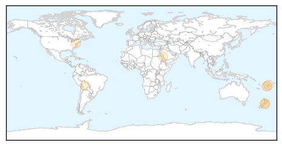
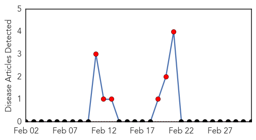

Dengue Fever
30-Day Web Trend
2 alerts, 5 warnings

30-Day Twitter Trend
2 alerts, 0 warnings

Article Locations
Article Confidences

Top Articles:
- 0.984
- New Zealand Warned of Possible Dengue Fever Outbreak Following Fiji Spate
- 0.749
- Fiji Times Online
- 0.617
- Saudi- 26 dengue fever cases detected in Jeddah
- 0.584
- Nearly 60,000 Households Affected by Bolivian Floods
- 0.574
- Dr. Peter Hotez, WHO Exhort World Leaders To Accelerate Efforts To Stamp Out NTDs In Indonesia BioNews Texas
- 0.551
- Five-hour hospital wait
Top Tweets:
-
No tweets found for Mar 03, 2014
Mumps
30-Day Web Trend
30 alerts, 0 warnings

30-Day Twitter Trend
0 alerts, 0 warnings

Article Locations

Article Confidences

Top Articles:
-
No articles found for Mar 03, 2014
Top Tweets:
-
No tweets found for Mar 03, 2014